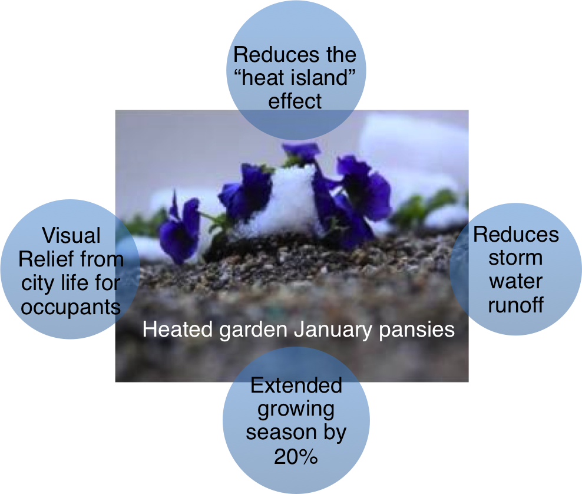

Green Roof

Why do we have a green roof?Average temperatures of cities are naturally 4-5 degrees hotter than suburban and rural areas because pavement absorbs more heat than soil. This is known as the heat island effect. Adding gardens to the roofs of buildings decreases the heat island effect and decreases the temperature of the city. 41CS hosts a green roof above the 9th floor.
How does the green roof help reduce pollution in NYC beaches?Green roofs reduce storm water runoff. That is, less water enters the sewer system because the soil in the green roof absorbs rainwater during storms. If there is an excess of water entering the sewer system, sewage must be dumped directly into rivers, causing pollution of NYC beachwater that may lead to swimming advisories and beach closings.
How is the green roof related to research at The Cooper Union?Currently, the Center for Innovation and Applied Technology (CIAT) led by Professor Dell of the Mechanical Engineering department is researching ways to improve the efficiency of the green roof on the Foundation Building. NYC law states that water used to heat buildings must be cooled to 65.6°C before being dumped into the sewage system. Most building systems cool this old heated water by mixing it with cool drinking water, wasting usable filtered water. The CIAT proposes passing heated water through pipes located below the green roof gardens. This extends the growing period of plants by 20% and naturally cools the water in the pipes without wasting drinking water. It is expected that NYC will save $9.8 million in water and sewage costs using this method. |
 |